Highlighted author(s): Markus Greiner, Vladan Vuletić, Mikhail D. Lukin
Authors: Simon J. Evered, Muqing Xu, Sophie H. Li, Alexandra A. Geim, J. Pablo Bonilla Ataides, Marcin Kalinowski, Dolev Bluvstein, Nishad Maskara, Christian Kokail, Markus Greiner, Vladan Vuletić, Mikhail D. Lukin
Type: experiment · Category: quantum information and computing · PDF: https://arxiv.org/pdf/2604.25987v1
Analysis basis: full PDF text, analyzed in chunks
Topic relevance: 🔥 QC/QI experiment 5/5 · 🔥 Rydberg arrays 5/5 · 🔥 entanglement & information structure 4/5 · non-equilibrium dynamics 3/5 · quantum optics experiment 2/5
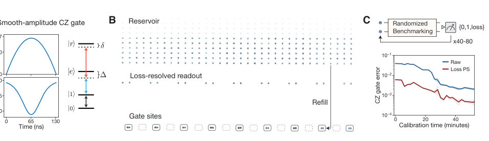
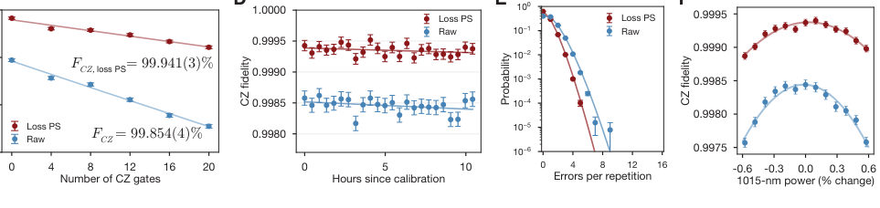
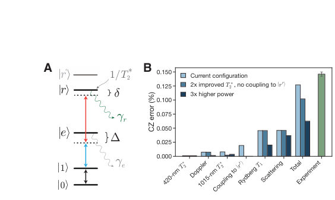
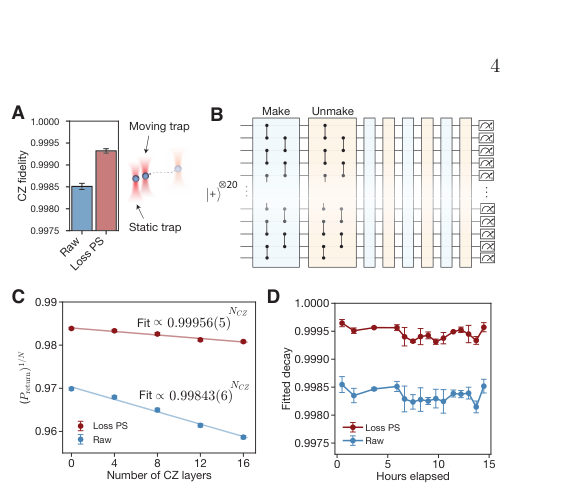
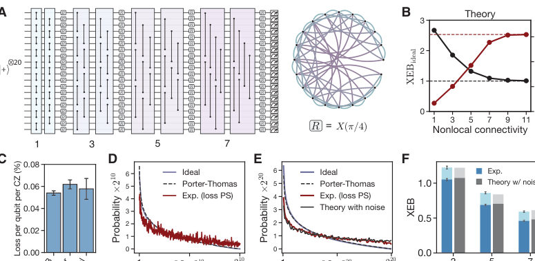
Main problem. The primary challenge is achieving high-fidelity two-qubit entangling gates and implementing complex, nonlocal quantum circuits to enable fault-tolerant quantum computation.
Main result. The researchers achieved state-of-the-art CZ gate fidelities of 99.854(4)% (improving to 99.941(3)% with loss postselection) and successfully implemented nonlocal circuits exhibiting super-ballistic scrambling.
Method. The team used a neutral-atom processor with smooth-amplitude pulses, randomized benchmarking (RB), and symmetric stabilizer benchmarking (SSB) to characterize gate performance and error sources.
Summary. This paper reports a significant advancement in neutral-atom quantum computing by demonstrating extremely high-fidelity CZ gates. By using optimized pulse shapes and efficient atom rearrangement, the researchers achieved gate fidelities near 99.9%. They further demonstrated that these high-fidelity gates can be used to execute complex, nonlocal quantum circuits that exhibit super-ballistic scrambling. This progress provides a scalable path toward fault-tolerant quantum error correction.
Model / system. A reconfigurable neutral-atom quantum processor using 87Rb atoms trapped in optical tweezers (SLM and AOD-controlled) and manipulated via Rydberg blockade interactions.
Key observables. CZ gate fidelity, return probability, cross-entropy benchmarking (XEB), entanglement entropy, and Porter-Thomas distribution convergence.
Important parameters / regimes. Rabi frequency of 2pi x 17 MHz, Rydberg state n=53, gate stability over 10 hours, and atom loss rate per gate.
Assumptions / limitations. The error analysis assumes that the primary error drivers are Rydberg state decay, intermediate state scattering, and position-induced frequency noise.
Figures summary. Figure 1 shows the gate pulse profile and processor architecture; Figure 2 presents benchmarking results and fidelity stability; Figure 3 details the error budget; Figure 4 illustrates gates with moving atoms; Figure 5 demonstrates 20-qubit circuit performance and XEB results.
Paper structure. The paper introduces the gate design and architecture, presents high-fidelity benchmarking and error analysis, demonstrates stability and robustness to atom movement, and concludes with the implementation of complex nonlocal scrambling circuits.
Why it may be interesting. This work is highly relevant for researchers in quantum optics and many-body dynamics as it demonstrates the control of entanglement in large-scale, reconfigurable systems and explores the transition to chaotic, scrambling dynamics in a programmable platform.
Creation and manipulation of entanglement with low error is essential in quantum information systems. In practice, two-qubit entangling gates constitute a dominant error source, limiting circuit depths and performance in fault-tolerant architectures. Using a neutral-atom quantum processor, we realize entangling CZ gates with a high Rabi frequency smooth-amplitude pulse, employing state-selective readout and qubit reuse for fast calibration, and achieve state-of-the-art fidelities of 99.854(4)% which improve to 99.941(3)% upon loss postselection, with stable performance for 10 hours. We then use these low-error gates in quantum circuits with coherent atom rearrangement. We first benchmark performance by creating and disentangling cluster states, and subsequently implement scrambling circuits featuring longer-range connectivity to study non-locally entangled states generated through chaotic dynamics. These results pave the way towards deep-circuit, efficient fault-tolerant quantum computation.
Highlighted author(s): Martino Stefanini, Jamir Marino
Authors: Oksana Chelpanova, Martino Stefanini, Dusan Sarenac, Tim Thomay, Jamir Marino
Type: theory · Category: other · PDF: https://arxiv.org/pdf/2604.26117v1
Analysis basis: full PDF text, analyzed in chunks
Topic relevance: 🔥 Dicke superradiance 4/5 · 🔥 correlated / nonlocal dissipation 4/5 · 🔥 interference shaping light 4/5 · free-space correlated emission 3/5 · superradiant laser 3/5 · methods for driven-dissipative 2/5 · non-equilibrium dynamics 2/5
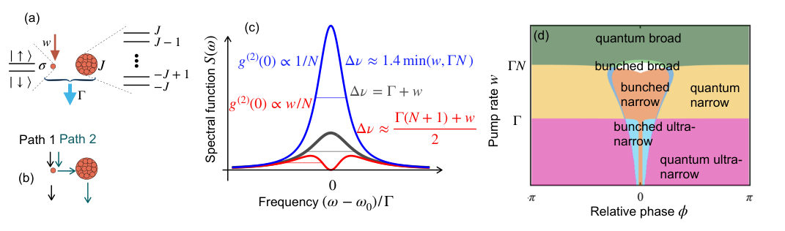
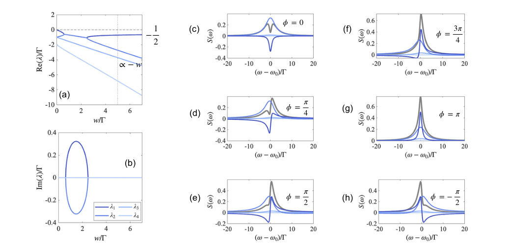
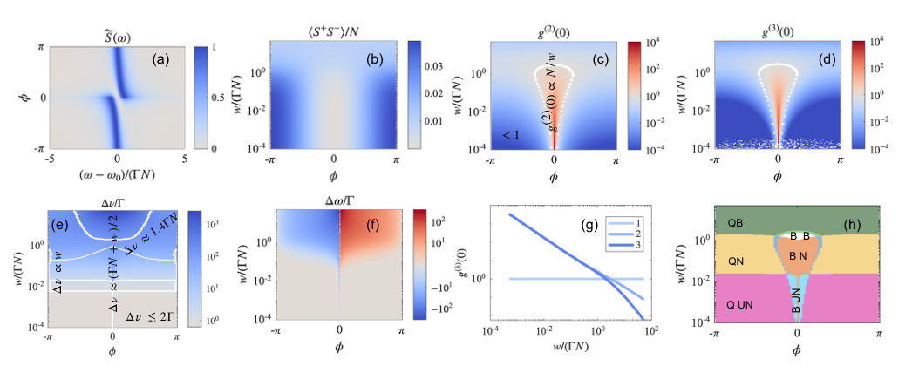
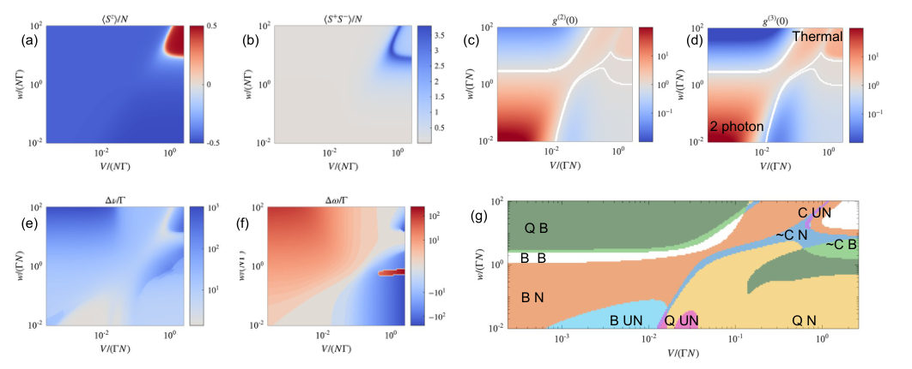
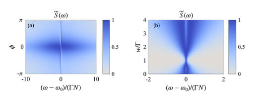
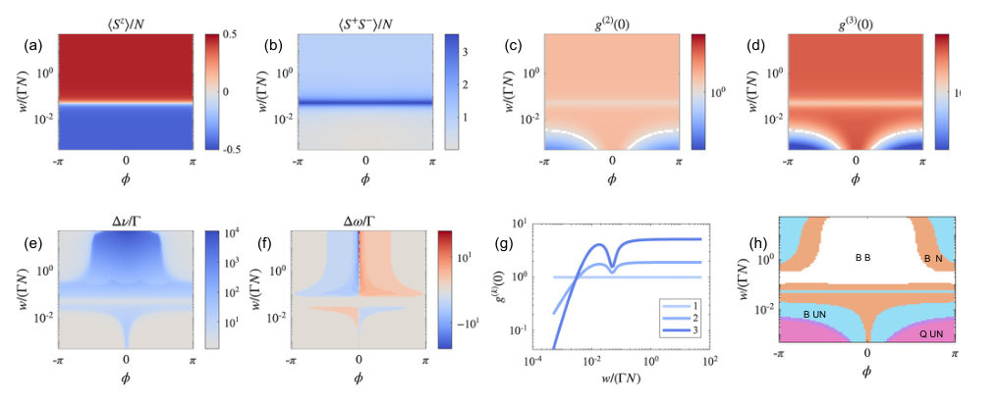
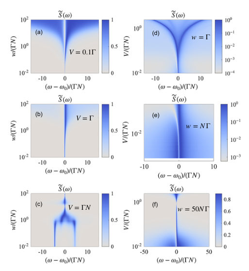
Main problem. The study seeks a versatile method to independently control both the photon statistics (quantum vs. classical) and the spectral linewidth of light emitted from an atomic ensemble.
Main result. The authors demonstrate that a single relative phase between pumped and unpumped atoms acts as a 'knob' to tune light from antibunched to bunched, and from broad to ultra-narrow linewidths.
Method. The study uses exact numerical solutions within the Dicke manifold, spectral decomposition of the Liouvillian, and adiabatic elimination for large-scale limits.
Summary. This paper investigates how a relative phase in a partially pumped atomic ensemble can serve as a single control knob for light properties. By tuning this phase and the pump rate, the researchers show that one can transition between quantum (antibunched) and classical (bunched) light while simultaneously controlling the spectral linewidth. The study also demonstrates that coherent interactions can replicate these interference effects and even stabilize superradiant-like lasing. This work offers a flexible framework for designing customized quantum light sources using collective dissipation.
Model / system. A minimal model of an ensemble of N+1 two-level atoms where one atom is incoherently pumped and the rest undergo collective decay, described by a Lindblad master equation with a phase-dependent jump operator.
Key observables. Photon statistics (g2, g3), spectral function S(omega), linewidth (delta nu), magnetization (Sz), and light intensity.
Important parameters / regimes. Relative phase (phi), pump rate (w), collective decay rate (Gamma), and coherent interaction strength (V).
Assumptions / limitations. The analysis primarily focuses on the maximal J subspace (Dicke states) and assumes a Lindblad master equation framework.
Figures summary. Fig 1 shows the setup and emission pathways; Fig 3/4 illustrates various regimes of linewidth and photon statistics; Fig 6 summarizes the relationship between observables like magnetization, intensity, and coherence.
Paper structure. The paper introduces the partially pumped model, analyzes the phase-controlled interference mechanism, explores the scaling of linewidth and statistics, extends the model to include coherent interactions, and discusses experimental implementation via cavity QED.
Why it may be interesting. It provides a novel mechanism for engineering light sources where dissipation and interference are used as resources to tailor quantum optical properties and stabilize narrow-linewidth emission.
We study a minimal model of collective light emission from an incoherently driven ensemble of atoms where incoherent drive is applied only to a part of atoms and show that both the linewidth and the photon statistics can be controlled within a single framework. In this setting, collective dissipation induces correlations between the pumped and unpumped parts of the system, leading to interference between their emission contributions. By introducing a relative phase between these contributions and tuning the pump rate, we demonstrate that the properties of the emitted light can be varied over a broad range. In particular, the linewidth can be made either independent of system size or scale extensively with it, while the photon statistics can be tuned from antibunched or quantum to bunched. We further show that the role of the relative phase in controlling the interference can alternatively be played by the coherent interaction. By tuning the interaction strength together with the pump rate, one can access the same regimes as in the dissipation-only model. In addition, coherent interactions stabilize regimes of coherent emission with narrow linewidth, reminiscent of superradiant lasing. Our results illustrate how interference in partially driven collective systems provides a flexible mechanism for tailoring both spectral and statistical properties of light.
Authors: Rikuto Fukumori, Chengyi Luo, Alexey Tiranov, Karolina Waszkowska, Philippe Goldner, Andrei Faraon
Type: experiment · Category: other · PDF: https://arxiv.org/pdf/2604.26909v1
Analysis basis: full PDF text, analyzed in chunks
Topic relevance: 🔥 Tavis-Cummings & cavity-many-emitter 5/5 · 🔥 Dicke superradiance 4/5 · 🔥 QC/QI experiment 4/5 · 🔥 correlated cavity matter 4/5 · 🔥 quantum optics experiment 4/5 · analog quantum simulation 3/5 · correlated / nonlocal dissipation 3/5 · spintronics-quantum-optics interface 3/5 · exotic spin models in light-matter 2/5 · non-equilibrium dynamics 2/5 · superradiant laser 2/5 · driven-dissipative phase transition 1/5 · entanglement & information structure 1/5 · quantum measurements 1/5
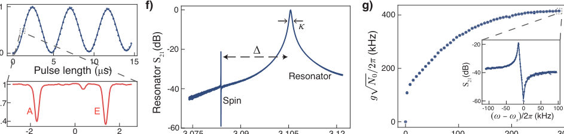
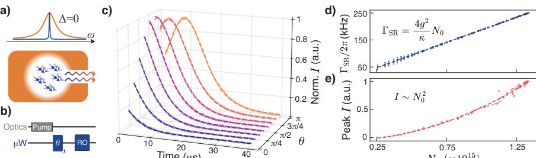
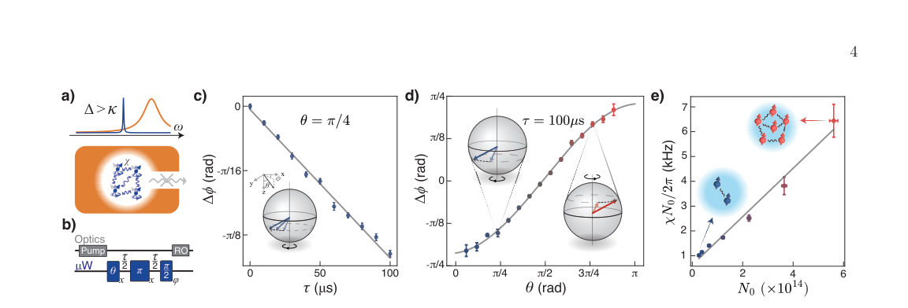
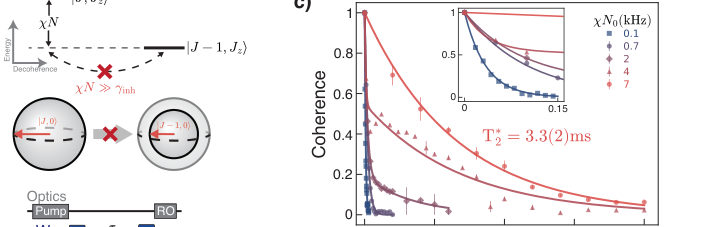
Main problem. The challenge of realizing coherent, cavity-mediated, all-to-all interactions and utilizing many-body gap protection in solid-state spin ensembles to overcome intrinsic inhomogeneous dephasing.
Main result. Demonstration of superradiant emission and unitary one-axis twisting in a Yb:CaWO4 crystal, achieving a 65-fold extension of Ramsey coherence time through interaction-induced gap protection.
Method. The researchers used microwave-driven spin spectroscopy, optical pumping/readout, and resonator transmission measurements in a 3D loop-gap resonator at millikelvin temperatures.
Summary. This paper reports the first observation of coherent, cavity-mediated all-to-all interactions in a solid-state spin ensemble using Yb:CaWO4. By tuning the spin-resonator detuning, the authors observe both superradiant emission and unitary one-axis twisting dynamics. Crucially, they demonstrate that the resulting many-body energy gap suppresses inhomogeneous dephasing, extending the ensemble's Ramsey coherence time from microseconds to milliseconds. This establishes a new platform for quantum metrology and many-body physics in the solid state.
Model / system. A millimeter-scale 171Yb3+:CaWO4 crystal coupled to a 3D microwave loop-gap resonator, described by the Tavis-Cummings Hamiltonian in the rotating frame.
Key observables. Superradiant emission rate, one-axis twisting phase shift, Ramsey coherence time (T2*), and resonator transmission (S21).
Important parameters / regimes. Resonant regime (superradiance) vs. dispersive regime (one-axis twisting); single-ion coupling g/2pi approx 15 mHz; inhomogeneous linewidth gamma_inh/2pi < 5 kHz.
Assumptions / limitations. Uniform single-spin coupling across the ensemble; adiabatic elimination of the cavity field in the dispersive limit; neglecting the single-particle rotation term in the large-N limit.
Figures summary. System overview and energy levels; spin spectroscopy and Rabi oscillations; resonator transmission spectra; extraction of collective coupling; and demonstration of superradiance and one-axis twisting dynamics.
Paper structure. The paper introduces the solid-state platform, details the experimental setup and spin properties, demonstrates superradiance in the resonant regime, demonstrates one-axis twisting in the dispersive regime, shows the enhancement of coherence via many-body gap protection, and discusses future metrological implications.
Why it may be interesting. It demonstrates a solid-state implementation of cavity QED phenomena (superradiance and OAT) typically associated with cold atoms, and shows how many-body interactions can be engineered to protect quantum information against environmental disorder.
Long-range interactions between emitters give rise to collective phenomena, including superradiance, spin squeezing, and coherence protection, that are important to both fundamental physics and quantum technologies. Despite progress in cold atoms, coherent cavity-mediated all-to-all interactions have not yet been realized in a solid-state ensemble. Here we demonstrate such interactions in a $^{171}$Yb$^{3+}$:CaWO$_4$ crystal coupled to a microwave resonator, observing superradiant emission on resonance and unitary one-axis twisting dynamics in the dispersive regime. The same interaction also opens a many-body energy gap that suppresses inhomogeneous dephasing, extending the ensemble Ramsey coherence time from tens of microseconds to milliseconds without decoupling pulses. These results establish a solid-state platform for collective many-body physics with direct implications for quantum technologies. Specifically, the observed one-axis twisting dynamics opens a path towards spin squeezing for entanglement-enhanced quantum metrology, and the extended coherence due to gap-protection is relevant for both microwave photon storage and precision measurement.
Authors: A. L. S. Santos Junior, M. Damaceno, A. C. Barbosa, N. A. Ribeiro, G. B. Alves, P. H. Souto Ribeiro, A. Z. Khoury
Type: experiment · Category: quantum information and computing · PDF: https://arxiv.org/pdf/2604.26816v1
Analysis basis: full PDF text, analyzed in chunks
Topic relevance: 🔥 interference shaping light 5/5 · 🔥 quantum optics experiment 5/5 · 🔥 QC/QI experiment 4/5 · entanglement & information structure 2/5 · quantum measurements 2/5
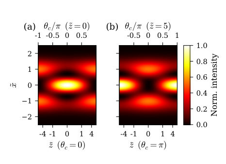
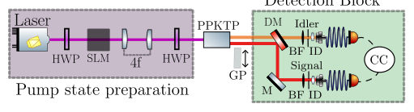
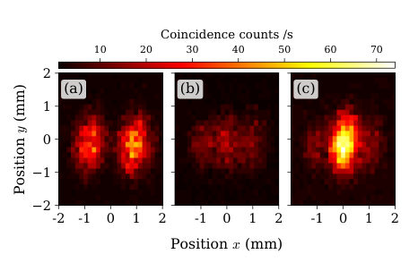
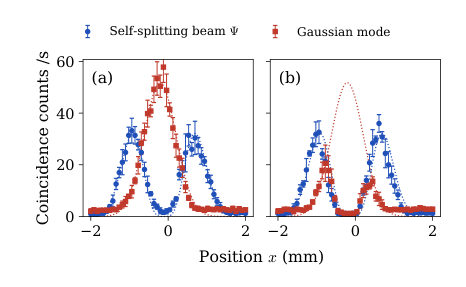
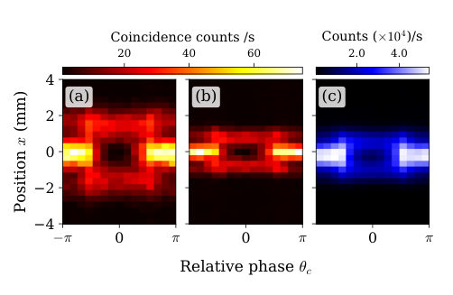
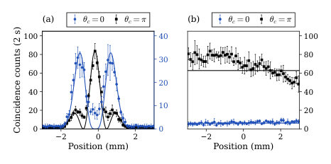
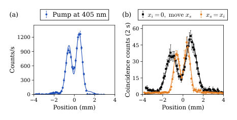
Main problem. Investigating how the spatial structure and propagation dynamics of a structured pump beam can be transferred to quantum-correlated photon pairs via Gouy phase engineering.
Main result. The researchers demonstrated that the pump beam's self-splitting and recombination dynamics are imprinted onto the photon correlations, creating a Mach-Zehnder-like interferometer that enables heralded single-photon interference, two-photon NOON state interference, and super-resolution.
Method. Using Spontaneous Parametric Down-Conversion (SPDC) in a PPKTP crystal, the pump beam is shaped with a Spatial Light Modulator (SLM) into Hermite-Gauss mode superpositions, and the resulting photon correlations are analyzed via 2D coincidence scanning.
Summary. This paper demonstrates how the Gouy phase of a structured pump beam can be used to engineer the spatial correlations of photon pairs produced via SPDC. By manipulating the pump beam's modes, the researchers created a 'self-splitting' quantum correlation that acts as a built-in Mach-Zehnder interferometer. They successfully observed heralded single-photon interference and two-photon NOON state interference, even achieving super-resolution. This technique provides a new way to control quantum light propagation and develop robust quantum metrology applications.
Model / system. An experimental platform consisting of a 405 nm CW laser, a PPKPT crystal for SPDC, and an SLM to prepare structured modes; the system utilizes the Gouy phase of Hermite-Gauss modes to engineer the spatial evolution of the biphoton state.
Key observables. Coincidence counting rate, heralded single-photon interference patterns, two-photon NOON state interference, and spatial fringe spacing.
Important parameters / regimes. Control phase (theta_c), Rayleigh length (z_R), beam width (w(z)), and the two-photon de Broglie wavelength.
Assumptions / limitations. Paraxial approximation for light propagation, thin crystal approximation for the SPDC process, and the assumption of full transfer of the pump's angular spectrum to the two-photon state.
Figures summary. Figure 1 shows the transverse intensity patterns of the self-splitting beam; Figure 2 depicts the experimental setup; Figure 3 displays 2D scans of heralded single-photon patterns; Figure 7 shows the far-field interference of the pump beam and the spatial coincidence distribution of down-converted photons.
Paper structure. The paper introduces the concept of Gouy phase engineering, describes the experimental setup and mode preparation, presents the results of the transfer of spatial structure to photon pairs, demonstrates the implementation of a spatial interferometer with super-resolution, and concludes with the implications for quantum metrology.
Why it may be interesting. This work is highly relevant to quantum optics and quantum information as it demonstrates a novel method for engineering complex spatial quantum states and implementing interferometric protocols (like NOON state sensing) using the intrinsic propagation dynamics of structured light.
In this work, we demonstrate the effect of self-splitting spatial quantum correlations induced by Gouy phase engineering. In the process of spontaneous parametric down conversion the pump beam is structured with a mode superposition that produces a dynamical splitting and recombination of the light beam. This structure is transferred to the quantum correlations between signal and idler photons. As a result the joint two-photon probability distribution propagates like a self-splitting and recombining light beam, implementing a Mach-Zehnder-like interferometer. We observe heralded single-photon interference and two-photon NOON state interference. These results open new avenues for applications in quantum metrology.
Authors: Matthew Diaz, Masoud Mohammadi-Arzanagh, Yingyue Zhu, Mohammad Hafezi, Norbert M. Linke, Alaina M. Green, Arthur Y. Nam
Type: both · Category: quantum information and computing · PDF: https://arxiv.org/pdf/2604.25993v1
Analysis basis: full PDF text, analyzed in chunks
Topic relevance: 🔥 QC/QI experiment 5/5 · analog quantum simulation 3/5 · non-equilibrium dynamics 3/5 · quantum optics experiment 3/5 · entanglement & information structure 2/5
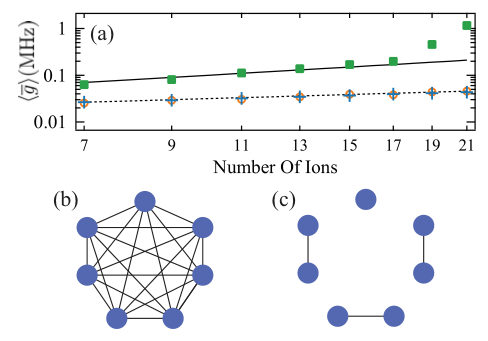
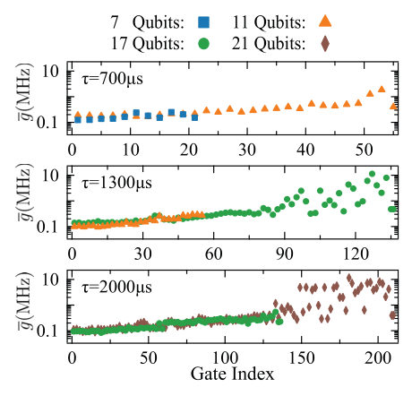
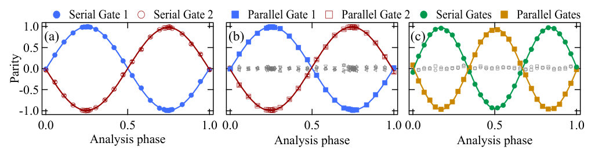
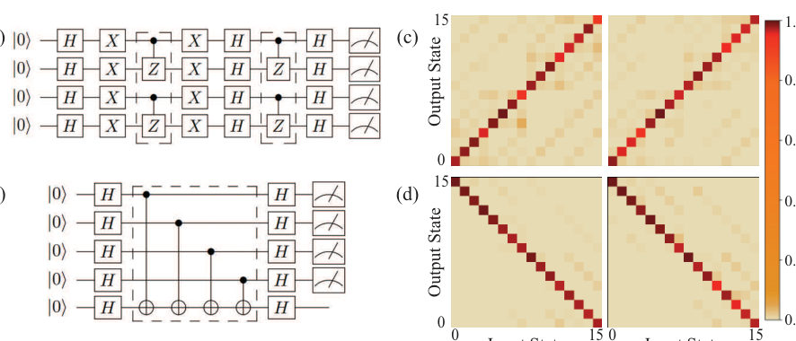
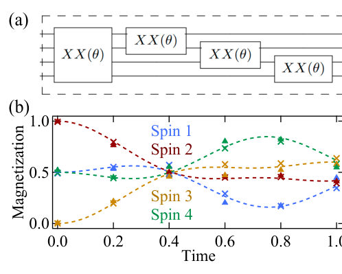
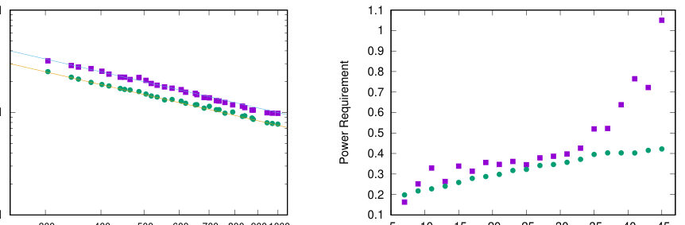
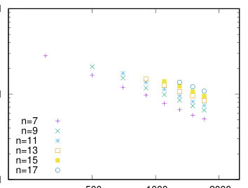
Main problem. The challenge of accelerating quantum computation in trapped-ion systems by implementing arbitrary parallel entangling gates without incurring exponential increases in power, gate time, or control complexity.
Main result. The authors demonstrate a pulse-synthesis method that enables graph-pattern-agnostic parallel gates with fidelities comparable to single-pair gates, achieving significant algorithmic speedups in tasks like the Heisenberg Hamiltonian simulation.
Method. An iterative three-step pulse synthesis approach using sine-based basis functions, a maximum weight matching problem for mode assignment, and a projector operator to explicitly cancel qubit-qubit crosstalk.
Summary. This paper presents a new method for implementing arbitrary parallel entangling gates in a trapped-ion quantum computer. By using an iterative pulse-shaping technique, the authors can execute multiple gates simultaneously across different graph patterns without needing unique calibrations for every possible combination. The approach significantly reduces execution time for various quantum algorithms while maintaining high gate fidelities. This advancement is crucial for scaling quantum architectures, particularly for multi-chain setups.
Model / system. A trapped-ion quantum computer using 171Yb+ ions, where entanglement is driven via Mølmer-Sørensen (XX) gates through spin-motion coupling in the Lamb-Dicke regime.
Key observables. Gate fidelity (via parity scans), entanglement phase angle, pulse power (RMS Rabi frequency), and gate duration.
Important parameters / regimes. Lamb-Dicke parameters, motional mode frequencies, gate duration, and the number of ions (N).
Assumptions / limitations. Assumes off-resonant coupling to other modes is naturally suppressed and that accurate estimation of Lamb-Dicke parameters is possible.
Figures summary. Figure 1 shows calculated pulse functions; Figure 4 compares output state probabilities for HS and BV algorithms; Figure 5 shows magnetization evolution in HH simulations; Figure 6 compares power scaling and power-time tradeoffs; Figure 7 shows power requirements vs. gate duration for various ion chain lengths.
Paper structure. The paper introduces the problem of parallelization, describes the physical platform and Hamiltonian, details the iterative pulse synthesis and power rebalancing methods, presents experimental/simulated benchmarks for various algorithms (HS, BV, HH), and discusses scaling and hardware implications.
Why it may be interesting. This work is highly relevant for researchers in quantum optics and AMO because it provides a scalable control protocol for many-body dynamics in ion chains, addressing the fundamental trade-off between gate speed, power, and crosstalk in driven quantum systems.
Parallel processing of information plays a critical role in accelerating computation. This includes quantum computers, where parallel processing of quantum information will play a critical role in practical quantum advantage. Here, we demonstrate a new type of parallel entangling gates in a trapped-ion quantum computer, that simultaneously provides efficient gate-pulse synthesis and calibration, as well as graph-pattern-agnostic implementation. We demonstrate the resulting reduced execution time in three well-known algorithms, exhibiting disjoint gates, a star graph and a ring graph respectively. For disjoint qubit pairs the execution time of our parallel gates is comparable to that of a single-pair entangling gate resulting in an approximately linear speed up. For all graph patterns our parallel gate fidelities are comparable to the fidelity of a single-pair entangling gate. These advantages motivate architectures featuring multiple medium length ion chains in future quantum computing devices.
Authors: Yan Wang, Shao-qi Lin, Rui-qi Shen, Fang-liang Chen, Fang-liang Chen, Fang-liang Chen, Yong-nan Sun, Qi-ping Su, Chui-ping Yang
Type: experiment · Category: quantum information and computing · PDF: https://arxiv.org/pdf/2604.26711v1
Analysis basis: full PDF text, analyzed in chunks
Topic relevance: 🔥 QC/QI experiment 4/5 · 🔥 entanglement & information structure 4/5 · 🔥 quantum optics experiment 4/5 · non-equilibrium dynamics 3/5 · correlated / nonlocal dissipation 2/5 · quantum measurements 2/5
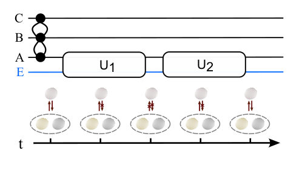
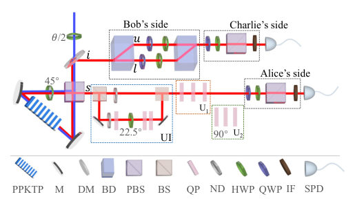
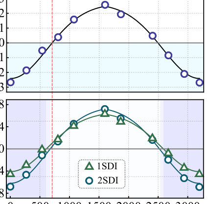
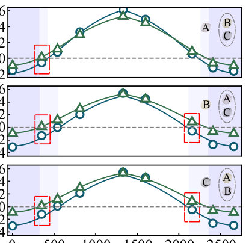
Main problem. The study investigates the non-Markovian evolution of tripartite quantum steering, specifically looking for the death and revival of quantum correlations and the asymmetric, hierarchical structures of steering in multipartite systems under decoherence.
Main result. The researchers experimentally observed the 'death and revival' of tripartite quantum steering and demonstrated a complex asymmetric steering structure across different bipartitions that does not exist in bipartite systems.
Method. The team used an optical setup with polarization-entangled photon pairs, employing an unbalanced interferometer and quartz plates to engineer time-dependent dephasing and memory effects, followed by three-qubit quantum state tomography.
Summary. This paper reports the experimental observation of non-Markovian evolution in tripartite quantum steering using photon polarization and path modes. The researchers demonstrated that quantum correlations can undergo 'sudden death' and subsequent 'revival' due to environmental memory effects. They also uncovered an asymmetric steering structure across different bipartitions, a feature absent in simpler bipartite systems. These findings highlight the potential of using non-Markovian environments to protect and recover multipartite quantum resources for asymmetric quantum information processing.
Model / system. The physical system consists of tripartite GHZ-type mixed states encoded in the path and polarization degrees of freedom of photons, interacting with an environment via a dephasing mechanism.
Key observables. One-sided device-independent (1SDI) and two-sided device-independent (2SDI) steering, entanglement witness (EW), and the degree of non-Markovianity (M).
Important parameters / regimes. Purity of the GHZ state (eta), control parameter for the superposition state (theta), and the degree of non-Markovianity (M).
Assumptions / limitations. The initial global state is assumed to be factorized, and the model assumes Bob and Charlie share the same environmental frequency.
Figures summary. Figure 1 provides a theoretical illustration of the tripartite non-Markovian evolution and transitions between steering regimes; Figure 2 details the experimental setup including the PPKTP crystal, interferometer, and measurement apparatus.
Paper structure. The paper introduces the problem of multipartite steering in non-Markovian environments, describes the experimental setup and state preparation, presents the results of the steering death and revival processes, analyzes the asymmetric hierarchical structures, and concludes with implications for quantum information processing.
Why it may be interesting. This work is highly relevant for researchers in open quantum systems and quantum optics as it provides experimental evidence of how memory effects can revive multipartite quantum resources and reveals new directional dynamics unique to multipartite systems.
The memory effects in open quantum systems can induce information backflow and revive quantum correlations, thereby providing a powerful way to protect and recover useful quantum resources in realistic noisy environments. However, such dynamics remains experimentally unexplored in multipartite quantum steering. Here we observe different non-Markovian evolution of tripartite quantum steering using Greenberger-Horne-Zeilinger-type mixed states, covering both death and revival processes. In particular, we experimentally demonstrate the more intricate asymmetric steering structure of tripartite quantum steering through different bipartitions, which do not arise in bipartite systems. Our results provide foundational insights into the hierarchical and directional structures in multipartite quantum steering, and highlight its potential as a useful resource for asymmetric quantum information processing.
Authors: I. V. Iukhnovets, M. Y. Goloshchapov, A. P. Gordeev, O. V. Bychkova, I. B. Bobrov, G. I. Struchalin, S. S. Straupe
Type: both · Category: other · PDF: https://arxiv.org/pdf/2604.26580v1
Analysis basis: full PDF text, analyzed in chunks
Topic relevance: 🔥 QC/QI experiment 4/5 · 🔥 Rydberg arrays 4/5 · interference shaping light 3/5 · methods for driven-dissipative 2/5 · quantum optics experiment 2/5
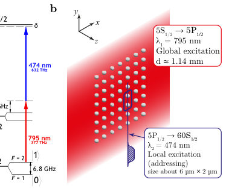
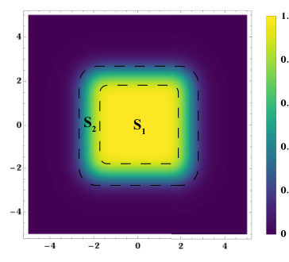
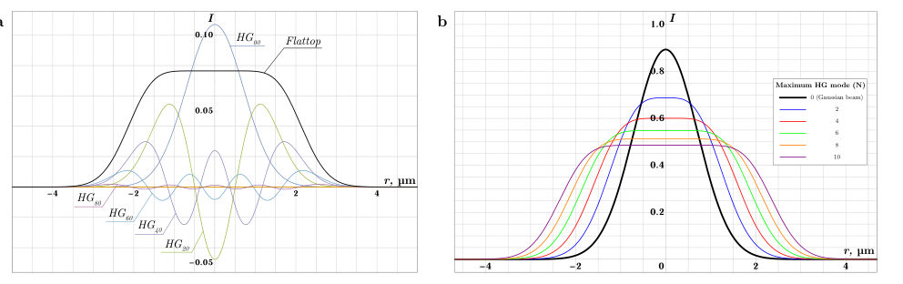
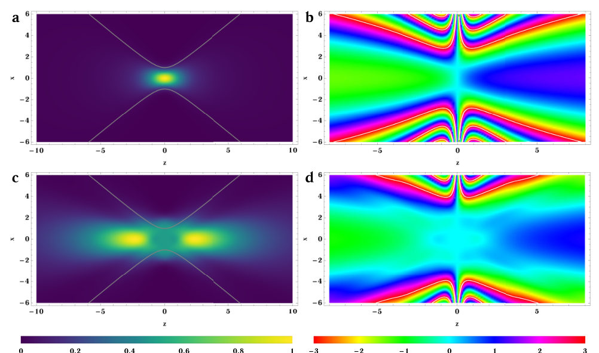
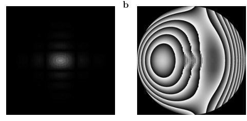
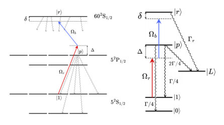
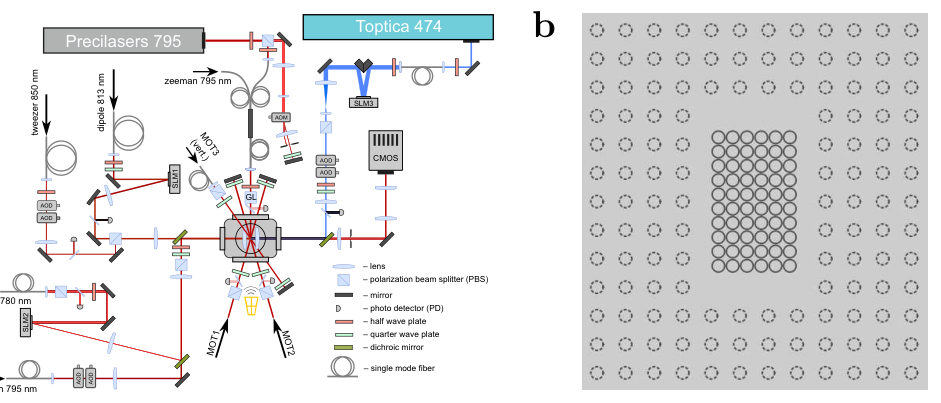
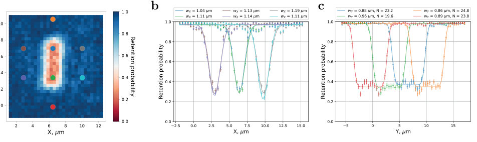
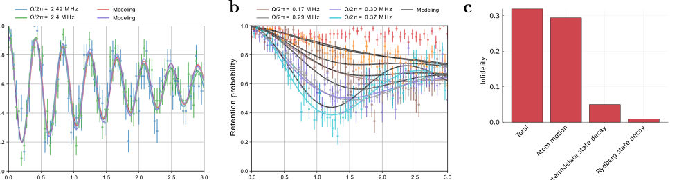
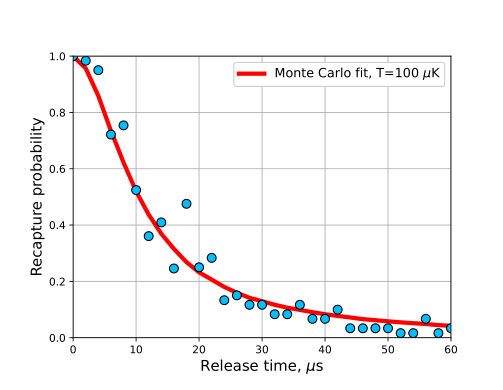
Main problem. The need for high-fidelity, site-selective Rydberg excitation in neutral-atom arrays by overcoming the non-uniformity of laser beam intensity and phase profiles that cause crosstalk and gate errors.
Main result. The development of a method to synthesize strongly focused 'flat-top' beams using a superposition of Hermite-Gaussian or Laguerre-Gaussian modes, demonstrating intensity uniformity exceeding 99% and significant crosstalk suppression.
Method. Beam shaping is achieved via a phase-only Spatial Light Modulator (SLM) to imprint a hologram, while the dynamics are analyzed using numerical solutions of the Lindblad master equation and Monte Carlo wave function methods.
Summary. This paper presents a method to create 'flat-top' laser beams for precise, site-selective Rydberg excitation in neutral-atom arrays. By superimposing Hermite-Gaussian or Laguerre-Gaussian modes using a spatial light modulator, the authors achieve highly uniform intensity profiles. This technique minimizes crosstalk between neighboring atoms and ensures consistent Rabi frequencies across the target array. The approach is experimentally validated, showing high uniformity and providing a scalable path for high-fidelity quantum gates.
Model / system. The system consists of arrays of single $^{87}$Rb atoms trapped in optical dipole traps, utilizing a two-photon Rydberg excitation scheme ($5S_{1/2} o 5P_{1/2} o 60S_{1/2}$) and the Rydberg blockade effect.
Key observables. Rabi oscillation visibility, atomic ionization density maps, crosstalk parameter (ratio of Rabi frequencies), and atom survival probability.
Important parameters / regimes. Rabi frequency ($\approx 2.4$ MHz), atom temperature ($\approx 100$ $\mu$K), beam waist ($w_x \approx 1.1$ $\mu$m, $w_y \approx 3.0$ $\mu$m), and trap depth ($800$ $\mu$K).
Assumptions / limitations. The paraxial approximation is used for beam propagation, and the beam phase is assumed to be uniform in the flat region.
Figures summary. Schematics of the excitation process and experimental setup; illustrations of the flat-top profile zones; plots of SLM holograms with and without aberration correction; and data on Rabi oscillations and the error budget for CZ gates.
Paper structure. The paper introduces the problem of beam non-uniformity, provides a theoretical framework for constructing flat-top beams via mode superposition, details the experimental implementation using SLM and aberration correction, and concludes with numerical/experimental validation of crosstalk suppression and error analysis.
Why it may be interesting. It provides a practical solution for improving gate fidelities in neutral-atom quantum computing by combining advanced optical beam-shaping theory with experimental implementation and rigorous error budgeting.
We present a method for generating a laser beam with flat intensity and phase profiles in the focal region where the beam interacts with neutral $^{87}$Rb atoms in an array of optical dipole traps. We synthesize the beam as a superposition of Hermite--Gaussian or Laguerre--Gaussian modes. Then we give analytical expressions for the coefficients of such a superposition, an analysis of beam propagation along the $z$ axis in the vicinity of the waist, and several other related theoretical issues. Rydberg two-qubit dynamics driven by this flat-top profile are analyzed through numerical solutions of the Lindblad master equation using our in-house Julia package. Beam preparation is demonstrated on a neutral-atom experimental platform. Measurements reveal a difference in the visibility of Rabi oscillations for addressed atoms compared with neighboring ones, confirming the effective spatial selectivity provided by the flat-top beam profile.
Authors: Tian-Gang Zhou, Thierry Giamarchi
Type: theory · Category: disordered systems and neural networks · PDF: https://arxiv.org/pdf/2604.25995v1
Analysis basis: full PDF text, analyzed in chunks
Topic relevance: 🔥 Keldysh / 2PI / non-Gaussian methods 4/5 · 🔥 entanglement & information structure 4/5 · non-equilibrium dynamics 3/5 · non-equilibrium universality 2/5 · scars & prethermalization 2/5
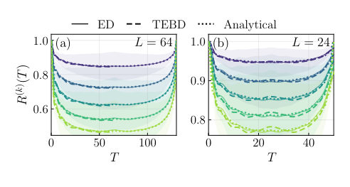
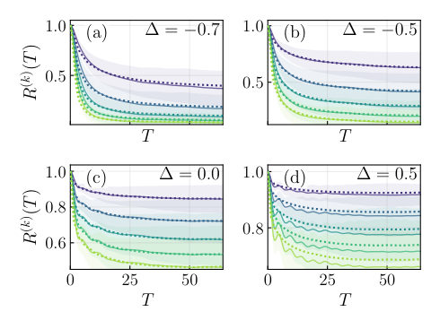
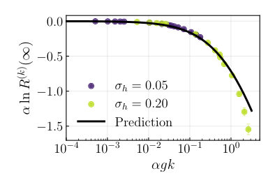
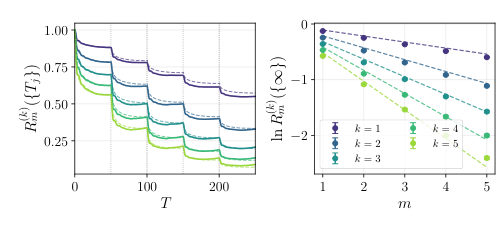
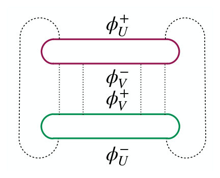
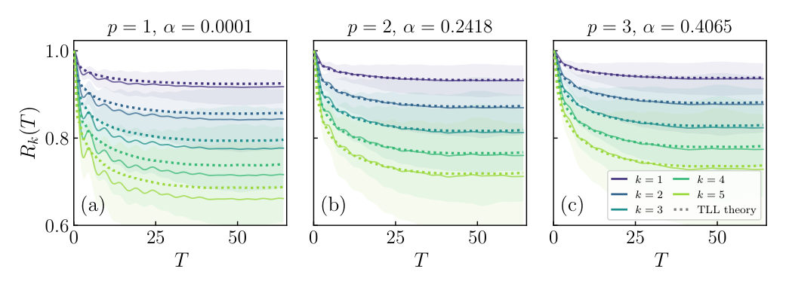
Main problem. The lack of an analytical treatment for the randomness of unitary ensemble dynamics, specifically the decay of the frame potential, in interacting 1D systems with disorder.
Main result. The authors derive a closed-form expression for the frame potential of a Tomonaga-Luttinger liquid with Gaussian forward-scattering disorder, showing it decays as a power law at early times and reaches a late-time plateau.
Method. The study employs bosonization and the Schwinger-Keldysh formalism, utilizing the matrix determinant lemma to evaluate the disorder-averaged Keldysh action.
Summary. This paper provides the first analytical description of how unitary dynamics in a disordered 1D interacting system approach Haar randomness. By studying the Tomonaga-Luttinger liquid, the authors show that the frame potential reaches a plateau determined by a single coupling parameter. They also demonstrate that randomness can be enhanced using multiple-quench protocols and that approaching the ferromagnetic limit maximizes scrambling. These findings offer practical guidance for designing analog quantum simulators.
Model / system. A Tomonaga-Luttinger liquid (TLL) with quenched Gaussian forward-scattering disorder, with a microscopic realization provided by a random-field XXZ spin chain.
Key observables. Frame potential (FP) and the normalized frame potential ratio R(k).
Important parameters / regimes. Luttinger parameter (K), sound velocity (u), disorder strength (gamma), dimensionless coupling (g), and anisotropy (Delta).
Assumptions / limitations. The disorder is restricted to the forward-scattering regime, and the analysis focuses on the gapless phase of the TLL at low temperatures.
Figures summary. Figure 6 compares different filter orders (p=1, 2, 3) to show how higher-order filtering improves agreement between theory and numerics; Figure 7 shows the time evolution of the FP ratio for various anisotropy and disorder strengths.
Paper structure. The paper introduces the problem of quantifying unitary randomness, presents the analytical derivation using Keldysh field theory, validates the results using TEBD and exact diagonalization, and discusses optimization via multiple quenches and filtering.
Why it may be interesting. It provides a direct analytical link between many-body parameters (like compressibility and interaction strength) and the performance of quantum algorithms, specifically regarding how effectively a system can act as a quantum design.
Disordered one-dimensional interacting systems have long been characterized via conventional correlation functions. A complementary quantum-information perspective quantifies the randomness of the unitary ensemble dynamics generated by a quantum system through the frame potential, which serves as a practical diagnostic for quantum algorithmic performance. However, no analytical treatment has yet been achieved for experimentally accessible interacting one-dimensional systems. In this Letter, we derive a closed-form expression for the frame potential of a Tomonaga-Luttinger liquid with quenched Gaussian forward-scattering disorder. Exploiting the exactly quadratic structure of the disorder-averaged Keldysh action, we show that the frame potential decays as a power law at early times and saturates to a late-time plateau controlled by a single coupling parameter. Taking the random field XXZ spin chain as a specific microscopic realization, we show that the strongest randomness is achieved near the Heisenberg ferromagnetic point and can be exponentially enhanced through a multiple-quench protocol. We validate our results across the entire gapless phase, with direct implications for algorithm design in analog quantum simulation platforms.
Authors: Riccardo Travaglino, Pasquale Calabrese
Type: theory · Category: statistical mechanics · PDF: https://arxiv.org/pdf/2604.26878v1
Analysis basis: full PDF text, analyzed in chunks
Topic relevance: 🔥 entanglement & information structure 4/5 · 🔥 non-equilibrium dynamics 4/5 · Keldysh / 2PI / non-Gaussian methods 2/5 · non-equilibrium universality 2/5 · scars & prethermalization 2/5
Main problem. The standard definition of entanglement asymmetry is analytically difficult to use in free-fermionic systems because the symmetrized state becomes non-Gaussian. The authors aim to introduce a new asymmetry measure that remains strictly within the Gaussian manifold.
Main result. The authors introduce a Gaussian asymmetry measure that quantifies the distance to the manifold of symmetric Gaussian states, which is extensive in subsystem size and can detect the quantum Mpemba effect and symmetry restoration.
Method. The study utilizes correlation matrix techniques, the quasiparticle picture for dynamics, and relative entropy to define the new measure and analyze its properties.
Summary. The paper addresses the analytical limitations of standard entanglement asymmetry in free-fermionic systems by proposing a new 'Gaussian asymmetry' measure. This new measure stays within the Gaussian manifold, allowing for exact calculations using correlation matrices and the quasiparticle picture. It successfully captures complex dynamical phenomena such as the quantum Mpemba effect and the lack of symmetry restoration in certain quenches. Furthermore, the authors show that charge fluctuations can serve as a practical experimental probe for these symmetry-related dynamics.
Model / system. The work focuses on Gaussian states in free-fermionic systems, specifically 1D hopping models (fermionic XX spin chain) and quenches from tilted ferromagnetic or Néel states.
Key observables. Gaussian asymmetry, entanglement entropy, non-Gaussianity, charge fluctuations (variance), and Full Counting Statistics (FCS).
Important parameters / regimes. Subsystem size (L_A), total system size (L), tilting angle (theta), and quasiparticle velocity (v_k).
Assumptions / limitations. The dynamics are restricted to the Gaussian manifold (e.g., quadratic Hamiltonians), and the focus is primarily on U(1) charge symmetry.
Figures summary. Figure 1 shows the time evolution of Gaussian asymmetry under different tilting angles; Figure 2 shows the lack of symmetry restoration in tilted Néel state quenches; Figure 3 shows the average Gaussian asymmetry for Gaussian ensembles; Figure 4 demonstrates the use of charge variance as a diagnostic for the Mpemba effect.
Paper structure. The paper introduces the Gaussian asymmetry measure, proves its mathematical properties (minimization and monotonicity), applies it to the dynamics of quantum quenches (detecting the Mpemba effect and symmetry restoration), and concludes by proposing experimentally accessible charge-based diagnostics.
Why it may be interesting. This paper is highly relevant for many-body dynamics as it provides a new, analytically tractable tool to study symmetry-breaking and relaxation phenomena like the Mpemba effect using simple, experimentally accessible charge fluctuations.
The study of Entanglement Asymmetry has emerged in recent years as a powerful tool to characterise the symmetry properties of quantum states in relation to a given charge operator through the lens of entanglement. While extremely powerful and general, the standard definition of asymmetry introduces significant non-Gaussian features in free-fermionic systems, leading to certain analytical limitations. In this work, we introduce an asymmetry measure that remains strictly within the Gaussian manifold and analyse its properties. In particular, we show that it quantifies the minimal distance between a Gaussian state and the manifold of symmetric Gaussian states. We further demonstrate that this measure captures the established dynamical signatures of entanglement asymmetry, such as the Mpemba effect, symmetry restoration, and the lack thereof. The Gaussian structure allows these novel asymmetry measures to be computed exactly using correlation matrix techniques, and to be described asymptotically through the quasiparticle picture. We also comment on the possibility of using charge fluctuations to characterise the asymmetry of a Gaussian state.
Authors: L. A. Williamson, W. McEniery, F. Cerisola, J. Anders
Type: theory · Category: statistical mechanics · PDF: https://arxiv.org/pdf/2604.26562v1
Analysis basis: full PDF text, analyzed in chunks
Topic relevance: 🔥 correlated / nonlocal dissipation 4/5 · entanglement & information structure 3/5 · Keldysh / 2PI / non-Gaussian methods 2/5 · methods for driven-dissipative 2/5 · non-equilibrium dynamics 2/5
Main problem. Characterizing the nature of equilibrium entanglement between two qubits mediated by a common thermal bosonic reservoir under strong coupling.
Main result. The authors derive analytic expressions for the mean-force Gibbs state, finding that entanglement is a non-monotonic function of coupling strength and can be enhanced by broadening the reservoir spectral density.
Method. The study employs the Mean-Force Gibbs (MFG) state framework, utilizing Reaction-Coordinate (RC) mapping, polaron transformations, and perturbative expansions in both coupling strength and spectral density width.
Summary. This paper investigates how two qubits can become entangled through their shared interaction with a thermal bosonic reservoir. By using the mean-force Gibbs state, the authors show that entanglement is not simply a monotonic function of coupling strength but peaks at a specific value. They also demonstrate that a broader reservoir spectrum can actually enhance qubit entanglement compared to a single-mode reservoir. These findings provide a theoretical benchmark for studying strong-coupling effects in open quantum systems.
Model / system. A spin-boson model consisting of two qubits (spin-1/2) strongly coupled to a common bosonic reservoir, characterized by a spectral density and reorganization energy.
Key observables. Negativity (as an entanglement monotone) and purity.
Important parameters / regimes. Coupling strength (lambda), temperature (T), reservoir spectral density width (gamma), qubit level spacing (omega_z), and qubit asymmetry (epsilon).
Assumptions / limitations. The system is assumed to reach the mean-force Gibbs state; the perturbative expansion is valid to the second order in coupling strength; and the low-temperature limit is used for certain analytical derivations.
Figures summary. Fig 1 shows the system setup, RC mapping, and calculation regimes; Fig 2 shows negativity and purity as functions of spectral broadening; Fig 3 identifies the boundary between regimes where broadening enhances or decreases entanglement.
Paper structure. The paper introduces the physical problem and model, presents the derivation of the MFG state using RC mapping and perturbative methods, explores the effects of temperature and coupling strength, investigates the impact of spectral density broadening, and validates results via numerical diagonalization.
Why it may be interesting. It provides a comprehensive understanding of how strong system-reservoir coupling and reservoir properties can be used as a resource to engineer entanglement in thermal equilibrium.
Two qubits strongly coupled to a common bosonic reservoir can become entangled with each other, despite having no direct interaction. In equilibrium, such coupling-induced coherences can be described by the mean-force Gibbs state. Here we derive approximate, analytic expressions for the two-qubit mean-force Gibbs state, and use these to characterize equilibrium qubit-qubit entanglement mediated by a thermal reservoir. Entanglement, which is highest at lowest temperatures, is a non-monotonic function of the system-reservoir coupling strength. Moreover, we find that broadening the reservoir spectral density beyond a single mode, as is realistic for typical baths, can enhance the qubit entanglement. Our results provide a comprehensive understanding of reservoir-mediated two-qubit entanglement in thermal equilibrium and provide a benchmark to compare with numerical methods, as well as demonstrating the utility of strong system-reservoir coupling as a resource.
Authors: Daniil D. Reshetnikov, Anna A. Kretova, Anastasia A. Fominova, Evgenii A. Vashukevich, Tatiana Y. Golubeva, Kirill S. Tikhonov
Type: experiment · Category: quantum information and computing · PDF: https://arxiv.org/pdf/2604.26554v1
Analysis basis: full PDF text, analyzed in chunks
Topic relevance: 🔥 QC/QI experiment 4/5 · 🔥 quantum optics experiment 4/5 · interference shaping light 2/5 · quantum measurements 2/5
Main problem. The trade-off between generation rate and statistical quality in optical Random Number Generators (RNGs), specifically addressing the limitations of high-rate semiclassical sources and low-rate quantum sources.
Main result. The authors propose and demonstrate a novel hybrid architecture that mixes photons from semiclassical and quantum sources, achieving high-quality random number sequences at an enhanced rate that can surpass traditional digital extraction methods.
Method. A comparative analysis of semiclassical, quantum, and hybrid optical architectures using NIST and diehard statistical test suites, alongside an evaluation of von Neumann and Babkin randomness extractors.
Summary. This paper investigates the optimization of optical random number generators by comparing semiclassical, quantum, and a new hybrid architecture. While semiclassical sources are fast but less random, and heralded quantum sources are high-quality but slow, the proposed hybrid approach combines both to achieve high-speed, high-quality randomness. The study also evaluates how different digital post-processing techniques, like the Babkin method, affect the statistical integrity of the generated sequences. Ultimately, the hybrid physical mixing of photons is shown to be superior to digital software-based mixing.
Model / system. An experimental optical platform comprising an attenuated 810 nm laser (semiclassical source), a heralded single-photon source via Spontaneous Parametric Down-Conversion (SPDC) in a Type-2 BBO crystal (quantum source), and a hybrid setup that coherently mixes both.
Key observables. Generation rate (bits per second), sequence quality (NIST p-values), Mean Absolute Error (MAE) of p-values, photon statistics, and polarization-related metrics like Stokes parameters.
Important parameters / regimes. Mean photon number per pulse (approx. 0.1), mixing frequency (ratio of pseudorandom to genuine random bits), and the number of bits used for statistical validation.
Assumptions / limitations. The semiclassical source is treated as a quasi-single-photon source via attenuation; the effectiveness of the hybrid source assumes the additivity of entropy from mixed radiation.
Figures summary. Schematics of the coherent, heralded, and hybrid architectures; comparison of median p-values across different sources; p-value distributions for raw vs. post-processed data; and the impact of mixing frequency on randomness quality.
Paper structure. Introduction to RNG importance; description of semiclassical and quantum experimental setups; presentation of the proposed hybrid architecture; comparative statistical analysis using NIST tests; evaluation of post-processing/extraction algorithms; and discussion of results and limitations.
Why it may be interesting. This work is highly relevant to quantum optics and quantum information as it addresses the practical implementation of high-speed, high-entropy entropy sources essential for quantum key distribution and fundamental quantum optical experiments.
Random numbers sequences (RNSs) play a vital role in various scientific and engineering applications. They are critical to the integrity of classical and quantum cryptography, the accuracy of mathematical modeling and Monte Carlo simulations, and the core mechanics of applications in fields as diverse as gambling and statistical sampling. While the primary criteria for RNSs sources are their quality and generation rate, their integration into experimental designs is equally significant for many fundamental physical tests and applications. This work presents a comparative analysis of optical random number generation architectures, which can be seamlessly included into various advanced classical and quantum optical experimental schemes. In particular, we evaluate the trade-off between the high generation rate of an attenuated laser (a quasi-single-photon source) and the superior statistical quality of a heralded single-photon source operating at a much lower frequency. To overcome the limitations of each individual source, we propose and examine a novel hybrid architecture that utilizes their mixed radiation, enabling the generation of highquality RNSs at an enhanced rate. Furthermore, we demonstrate that the raw sequences generated by such a source can not only exhibit but, in some cases, even surpass the degree of randomness achieved by sequences processed through powerful randomness extractors.
Authors: Vaibhav Mohanty, Sunghan Ro
Type: theory · Category: statistical mechanics · PDF: https://arxiv.org/pdf/2604.26093v1
Analysis basis: full PDF text, analyzed in chunks
Topic relevance: 🔥 entanglement & information structure 4/5 · non-equilibrium dynamics 3/5 · non-equilibrium universality 2/5 · scars & prethermalization 2/5
Main problem. Investigating the nature of nonlinear hydrodynamic equations and information-theoretic evolution in systems with subsystem symmetries, specifically regarding the conservation of marginal distributions.
Main result. Subsystem symmetries generically produce nonlinear hydrodynamic equations with shear-only transport, where initial localization in marginals is preserved; additionally, total correlation decays monotonically while pairwise mutual information can exhibit non-monotonic behavior in dimensions d > 2.
Method. The authors use a gradient expansion of a microscopic master equation to derive a continuum hydrodynamic limit, apply the maximum-entropy principle to find equilibrium distributions, and utilize information-theoretic functionals (KL divergence, total correlation) to analyze dynamics.
Summary. This paper explores how conservation laws applied to subsystems (marginals) rather than the whole system lead to nonlinear hydrodynamic equations. The authors show that these symmetries result in shear-only transport and the preservation of initial spatial localization. They also demonstrate that while total correlation always decreases toward equilibrium, pairwise mutual information can temporarily increase in dimensions higher than two. This work connects the physics of fracton-like systems with the principles of information theory and entropy production.
Model / system. A lattice-based particle system (e.g., 2D square lattice) featuring shear-only transport and subsystem symmetries where mass density is conserved along hyperplanes, providing a hydrodynamic realization of partial multipole-moment conservation.
Key observables. Particle density, current tensor, marginal distributions, Shannon entropy, KL divergence, Total Correlation, and pairwise Mutual Information.
Important parameters / regimes. Dynamical scaling exponent z = 2k, diffusion constant D, and dimensionality d.
Assumptions / limitations. Assumes vanishing boundary terms during integration by parts and that noise is Gaussian, local in space and time.
Figures summary. Figure 1 illustrates the microscopic shear model on a lattice; Figure 2 shows numerical simulations of density evolution from a mixture of Gaussians to a product-form equilibrium; Figure 4 shows the monotonic decrease of KL divergence.
Paper structure. The paper introduces the problem of subsystem symmetries, derives the nonlinear hydrodynamic equations via continuum limit, generalizes the theory to higher dimensions, explores the connection to partial multipole-moment conservation, and concludes with an information-theoretic analysis of entropy and correlation dynamics.
Why it may be interesting. It provides a fundamental link between fracton hydrodynamics and information theory, offering concrete observables like non-monotonic mutual information that can be tested in site-resolved quantum gas microscopes.
Diffusion with multipole-moment conservation gives rise to transport laws that generalize Fick's law and has attracted growing attention following experimental advances in strongly tilted optical lattices. It was recently shown that conserving complete multipole-moment groups leads to subdiffusive dynamics governed by a nonlinear diffusion equation, raising the question of whether hydrodynamic equations would also be nonlinear when the conservation law is imposed only at the subsystem level. Here we show that subsystem symmetries generically produce nonlinear hydrodynamic equations with shear-only transport, in which any localization present in the initial marginal distributions is preserved at long times by the conservation of those marginals. A linear regime emerges only as a limiting case for small fluctuations around a uniform background. We derive the deterministic and fluctuating parts of the hydrodynamic equations in arbitrary dimensions and obtain the corresponding maximum-entropy equilibrium distributions under constrained marginals. We also show that marginal-conserving diffusion provides a concrete hydrodynamic realization of partial multipole-moment conservation, and we offer an information-theoretic interpretation in which total correlation decays monotonically even when pairwise mutual information does not.
Authors: A. Pontin, Q. Deplano, F. Marino, F. Marin
Type: experiment · Category: other · PDF: https://arxiv.org/pdf/2604.26790v1
Analysis basis: full PDF text, analyzed in chunks
Topic relevance: 🔥 quantum optics experiment 4/5 · quantum measurements 3/5 · Tavis-Cummings & cavity-many-emitter 2/5 · correlated / nonlocal dissipation 2/5
Main problem. The challenge of demonstrating optical squeezing mediated by mechanical oscillators that are specifically prepared in their quantum ground state, while overcoming the mutually exclusive regimes of traditional optomechanics.
Main result. Demonstration of optical squeezing below the shot-noise level (2% below vacuum fluctuations) mediated by two mechanical modes in their quantum ground state.
Method. The researchers used balanced heterodyne detection and a numerical lock-in amplifier to reconstruct the full spectral covariance matrix of the optical field, incorporating a phase noise model to achieve agreement with experimental data.
Summary. This paper reports the first demonstration of optical squeezing mediated by two mechanical oscillators that are simultaneously cooled to their quantum ground state. Using a levitated nanoparticle in an optical cavity, the researchers observed squeezing 2% below the shot-noise level. The study successfully accounts for experimental phase noise to match theoretical predictions. This achievement bridges mechanical quantum control with the generation of non-classical light, establishing a new platform for multi-mode optomechanical quantum interfaces.
Model / system. A levitated silica nanoparticle in an optical tweezer placed inside a high-finesse optical cavity, operating in the resolved sideband and strong coupling regimes where two transverse mechanical modes hybridize with the optical mode.
Key observables. Quadrature fluctuations, spectral covariance matrix elements (S_QQ, S_PP, S_QP, S_PQ), power spectral densities, and occupation numbers.
Important parameters / regimes. Mechanical frequencies (approx. 121 kHz and 109 kHz), occupation numbers (n < 1), cavity linewidth (57 kHz), and detection efficiency (0.32).
Assumptions / limitations. The model assumes the nanosphere is in its quantum ground state and uses a Gaussian-distributed fluctuating phase to account for residual experimental phase noise.
Figures summary. Figure 1 shows the experimental setup; Figure 2 displays the reconstructed spectral covariance matrix; Figure 3 presents 2D maps of the optical quadrature spectrum; Figure 4 compares the optimal quadrature spectrum against models with and without phase noise.
Paper structure. The paper introduces the experimental setup and the problem of ground-state mediated squeezing, describes the optomechanical platform and detection methods, presents the reconstruction of the covariance matrix and the observation of squeezing, and concludes with a discussion on modeling phase noise and future directions.
Why it may be interesting. This work is highly relevant for researchers in quantum optics and open quantum systems as it demonstrates the control of non-classical light through the hybridization of multiple mechanical modes in the quantum regime, providing a platform for multi-mode quantum interactions.
We demonstrate optical squeezing below the shot-noise level generated through the interaction of an optical cavity field with two center-of-mass modes of a levitated nanoparticle, simultaneously cooled to occupation numbers well below unity. By analyzing the quadrature fluctuations of the cavity output through heterodyne detection, we resolve the full spectral covariance matrix of the optical field and map regions of sub-shot-noise squeezing as a function of detection phase and frequency. Operating in the resolved sideband and strong coupling regime where mechanical modes hybridize with the optical mode, we observe consistent squeezing in the band 70-95 kHz with a lowest variance of 0.98 (2$\%$ below vacuum fluctuations). We thus demonstrate optical squeezing mediated by multiple mechanical oscillators in their quantum ground state, bridging mechanical quantum control with non-classical light and establishing levitated optomechanics as a platform for multimode quantum interactions.
Authors: Truman Yu Ng, Yuzhu Wang, Wei Jie Chan, Ruizhe Shen, Tianqi Chen, Ching Hua Lee
Type: both · Category: quantum information and computing · PDF: https://arxiv.org/pdf/2604.26914v1
Analysis basis: full PDF text, analyzed in chunks
Topic relevance: 🔥 QC/QI experiment 4/5 · correlated / nonlocal dissipation 2/5 · non-equilibrium dynamics 2/5 · quantum measurements 2/5
Main problem. The difficulty of simulating and characterizing complex, multi-band non-Hermitian knotted band structures on programmable quantum hardware due to the high cost of variational optimization and the challenges of extracting topological braid information.
Main result. The authors successfully implemented a non-variational protocol on a superconducting quantum processor to reconstruct complex knots and links, such as the Hopf chain and Solomon's knot, by mapping energy band windings to braid words and knot invariants.
Method. A non-variational protocol using unitary embedding and post-selection on an ancilla qubit to simulate non-unitary evolution, combined with a measurement strategy that extracts a winding matrix to reconstruct braid words and knot polynomials.
Summary. This paper presents a new method to simulate and identify complex knotted energy bands in non-Hermitian systems using a quantum computer. By avoiding expensive optimization, the authors use a non-variational protocol to extract topological information like braid words and knot polynomials. They experimentally demonstrate this on an IBM quantum processor, successfully reconstructing complex structures like the Solomon's knot. This approach offers a general way to study exotic non-Hermitian topology on near-term quantum devices.
Model / system. A family of N-band non-Hermitian 'twister' Hamiltonians implemented on an IBM superconducting quantum processor (ibm_marrakesh), utilizing ancilla qubits for non-unitary dynamics.
Key observables. Braid words, knot invariants (Alexander and Jones polynomials), winding number matrix (W_ij), and Bloch angles (theta, phi) for eigenstate reconstruction.
Important parameters / regimes. Hamiltonian parameters m0 and m1, number of bands N, and the number of harmonics V.
Assumptions / limitations. The reconstruction assumes a fixed gauge where the final component of the eigenstate is real-valued, and the error model assumes exponential decay in the weak-noise regime.
Figures summary. Figure 1 shows the relationship between braids and their closures (Hopf link and Solomon's knot); Figure 2 details the experimental workflow including circuit implementation and winding number calculation; Figure 3 demonstrates N=2 braid characterization; Figure 4 shows phase boundaries in parameter space.
Paper structure. The paper begins with the mathematical definition of braids and knots, introduces the twister Hamiltonian and the non-variational measurement protocol, details the quantum circuit implementation via unitary embedding, presents experimental results for N=2 and N=4 systems, and concludes with a comparison of topological invariants and error analysis.
Why it may be interesting. This work is highly relevant for researchers in open quantum systems and many-body dynamics as it provides a scalable framework for exploring non-Hermitian topology and complex spectral braiding using near-term quantum hardware.
Knots and links represent a fundamental motif of non-local connectivity that permeates the physical sciences from string theory to protein folds. While spectral braiding has been explored in two-band non-Hermitian models across various platforms, its direct simulation and characterization on programmable quantum hardware, particularly beyond two strands, remains a formidable challenge due to the limitations of variational optimization in these systems. Here, we introduce a family of non-Hermitian multi-band twister models and implement a non-variational protocol to characterize their complex braided band structures on a programmable superconducting quantum processor. By mapping the winding of eigenstates to the spectral topology, we devise an efficient measurement strategy that extracts braid information, including braid words and knot invariants like the Alexander and Jones polynomials, without requiring full spectral tomography or repeated optimization. We experimentally demonstrate the reconstruction of complicated knots and links such as the Hopf chain and Solomon's knot. Our approach provides a general framework for investigating exotic non-Hermitian topology on near-term quantum devices, opening a route to simulate more sophisticated topological structures in knot theory.
Authors: Alessandra Colla, Andrea Smirne, Heinz-Peter Breuer, Bassano Vacchini
Type: theory · Category: statistical mechanics · PDF: https://arxiv.org/pdf/2604.26856v1
Analysis basis: full PDF text, analyzed in chunks
Topic relevance: 🔥 quantum measurements 4/5 · methods for driven-dissipative 3/5 · non-equilibrium dynamics 3/5
Main problem. The lack of an operational procedure to evaluate thermodynamic fluctuations (work, heat, and internal energy) in open quantum systems using only system-accessible degrees of freedom, especially in non-unital and strong-coupling regimes.
Main result. The authors propose a two-point system-only measurement scheme that provides exact equalities for thermodynamic fluctuations and identifies correction factors to the Jarzynski equality. They specifically show that in pure decoherence dynamics, the Jarzynable equality for work holds identically at any coupling strength.
Method. A Two-Point Measurement Scheme (TPMS) applied to the reduced system using dynamics-dependent thermodynamic observables, utilizing the time-local master equation framework and the 'minimal dissipation' approach.
Summary. This paper develops a new method to measure thermodynamic quantities like work and heat in open quantum systems by only looking at the system itself. It overcomes the difficulty of accounting for environmental effects and renormalization in strong-coupling regimes. The authors derive new versions of the Jarzynski equality that include correction factors for non-unital dynamics. They demonstrate that for certain types of decoherence, standard fluctuation theorems remain valid even at high coupling. The framework is versatile enough to cover both Markovian and non-Markovian dynamics.
Model / system. An open quantum system (specifically a qubit) interacting with a heat bath, described by a time-local (TCL) master equation. The model includes phase-covariant dynamics and the Jaynes-Cummings model for non-Markovian regimes.
Key observables. Work (w), heat (q), internal energy (u), non-equilibrium free energy, and correction factors (Lambda) for fluctuations.
Important parameters / regimes. Inverse temperature (beta), coupling strength (weak vs. strong/ultrastrong), Markovian vs. non-Markovian regimes, and unital vs. non-unital dynamics.
Assumptions / limitations. The environment starts in a thermal state, and the initial system-environment state is factorized.
Figures summary. Figure 1 shows the temporal evolution of the work correction factor and its upper bound; Figure 3 illustrates the work correction factor for a qubit at varying temperatures.
Paper structure. The paper introduces the problem of thermodynamic fluctuations in open systems, proposes a new measurement framework using system-only observables, derives modified Jarzynski-like equalities and bounds, and then applies the framework to specific cases like pure decoherence and the Jaynes-Cummings model.
Why it may be interesting. It provides a unified, operational framework for studying non-equilibrium thermodynamics in complex regimes (strong coupling, non-Markovianity) without needing to measure the environment, which is highly relevant for anyone working on open quantum systems or quantum thermodynamics.
We propose a method to evaluate general thermodynamic fluctuations in open quantum systems, based on performing a two-point measurement scheme on the system using dynamics-dependent thermodynamic observables. Our approach allows one to obtain exact equalities for fluctuations of path-dependent thermodynamic quantities such as work and heat, and to isolate correction factors to Jarzynski's equality, requiring only access to the system degrees of freedom. This framework is flexible and can be applied to the limiting case of closed systems, recovering previous, yet seemingly contradictory, results from the literature. Moreover, the formalism admits a straightforward extension to strongly coupled open quantum systems. We investigate the effect of specific dynamical classes on the fluctuation relations, and show that the pure decoherence case is particularly special, as it deterministically does not contain any heat contribution and thus constitutes a class of open system dynamics for which the Jarzynski equality for work fluctuations is identically true at any coupling strength. Finally, we look explicitly at the shape and size of the correction factors to Jarzynski's equality for a qubit undergoing phase covariant dynamics, both in the weakly-coupled regime and in the deep non-Markovian regime.
Authors: Damien Roux, Giulia Guarda, Mujtaba Zahidy, Yunhong Ding, Siyan Zhou, Domenico Ribezzo, Battulga Munkhbat, Francesco Da Ros, Davide Bacco, Caterina Vigliar
Type: experiment · Category: quantum information and computing · PDF: https://arxiv.org/pdf/2604.26791v1
Analysis basis: abstract only; PDF text extraction failed or PDF unavailable
Topic relevance: 🔥 QC/QI experiment 4/5 · 🔥 quantum optics experiment 4/5
Main problem. The difficulty of distributing path-encoded entanglement over long distances due to the fragility of phase coherence between spatial modes in photonic integrated circuits.
Main result. Successful chip-to-chip distribution of path-encoded entangled states over an 80-km dual-core fiber link with a Bell state fidelity of 85.7% and a secure key rate of 2.03 bit/s.
Method. Generation of telecom-band entangled photon pairs via spontaneous four-wave mixing in silicon photonic spiral waveguides, followed by distribution through an actively stabilized multicore fiber link.
Summary. The researchers demonstrated the distribution of path-encoded entanglement between two silicon photonic chips over an 80-km fiber link. By using an actively stabilized dual-core fiber, they overcame the phase coherence issues typically associated with long-distance spatial mode encoding. The experiment achieved a high Bell state fidelity and successfully implemented a quantum key distribution protocol. This result proves that silicon photonics can serve as a scalable platform for large-scale, device-independent quantum networks.
Model / system. An experimental platform consisting of fully integrated silicon photonic transmitter and receiver chips connected by an 80-km dual-core fiber link.
Key observables. Bell state fidelity and secure key rate (BBM92 protocol).
Important parameters / regimes. 80-km fiber distance, 85.7% Bell state fidelity, 2.03 bit/s secure key rate.
Paper structure. The paper introduces the challenge of long-range entanglement, describes the experimental setup using silicon photonics and multicore fiber, reports the fidelity of the distributed states, demonstrates QKD implementation via the BBM92 protocol, and concludes with the implications for scalable quantum networks.
Why it may be interesting. This work demonstrates a practical implementation of long-distance quantum communication using integrated photonics, which is highly relevant to quantum optics and the development of scalable quantum networks.
Long-range quantum entanglement is essential for building large-scale quantum networks and unconditionally secure cryptographic systems based on quantum key distribution (QKD). While photonic integrated circuits offer a highly scalable platform, the fragility of phase coherence between spatial modes has prevented the distribution of path-encoded entanglement over long distances. Here, we report chip-to-chip distribution of path-encoded entangled states over 80 km between fully integrated silicon photonic transmitter and receiver chips. Telecom-band entangled photon pairs are generated via spontaneous four-wave mixing in on-chip spiral waveguides and distributed between chips over a dual-core, actively stabilized fiber link. Upon distribution, we measure a Bell state fidelity of $85.7 \pm 0.2 \%$. Implementing the BBM92 protocol with the same source, we obtain a secure key rate of 2.03 bit/s in the infinite-key regime. These results establish silicon photonic chips as a viable platform for long-distance path-encoded entanglement-based quantum key distribution, paving the way toward scalable, device-independent quantum networks.
Authors: Rafael Bentes de Sales, Krissia Zawadzki
Type: theory · Category: strongly correlated electrons · PDF: https://arxiv.org/pdf/2604.26146v1
Analysis basis: full PDF text, analyzed in chunks
Topic relevance: 🔥 non-equilibrium dynamics 4/5 · analog quantum simulation 2/5 · non-equilibrium universality 2/5
Main problem. The difficulty of preparing many-body ground states via shortcuts to adiabaticity (STA) in critical systems where multiple energy gaps close during a topological phase transition.
Main result. A multi-step 'two-plateau' Minimal Action Shortcut to Adiabaticity (MA-STA) protocol is proposed, which significantly outperforms linear ramps in achieving high fidelity and suppressing work fluctuations.
Method. The authors use the Minimal Action Shortcut to Adiabaticity (MA-STA) framework to minimize an adiabatic action integral, employing a multi-step optimization strategy to handle competing momentum-dependent gaps.
Summary. This paper addresses the challenge of driving a Kitaev chain through a topological phase transition without inducing excitations. The authors find that standard shortcuts to adiabaticity fail when multiple momentum-dependent gaps close simultaneously. By proposing a multi-step 'two-plateau' optimization strategy, they demonstrate that high-fidelity state preparation can be achieved much faster than traditional linear ramps. The study also highlights how accounting for different momentum subspaces is crucial for effective control in many-body systems.
Model / system. A 1D Kitaev chain of spinless fermions with time-dependent chemical potential, characterized by hopping amplitude, superconducting pairing, and parity-conserving dynamics.
Key observables. State fidelity, work statistics (probability distribution, mean, variance, and skewness), and spectral gaps in different momentum sectors.
Important parameters / regimes. Chemical potential (driving parameter), superconducting gap (pairing amplitude), hopping amplitude, and the ratio of pairing to hopping (|delta|/omega).
Assumptions / limitations. The use of the thermodynamic limit (bulk approximation) and the assumption that the Hamiltonian remains block-diagonal in parity sectors.
Figures summary. Figure 1 shows energy eigenvalue evolution and spectral gaps; Figure 3 compares fidelity across different system sizes; Figure 4 illustrates the necessity of the two-plateau approach; Figure 7 displays work distribution and its moments.
Paper structure. The paper introduces the problem of gap closures in topological transitions, defines the Kitaev chain model, presents the MA-STA optimization framework, analyzes the impact of competing gaps, proposes a multi-step strategy, and validates the results through fidelity and work statistics comparisons.
Why it may be interesting. This work is highly relevant for many-body dynamics as it provides a practical control strategy for navigating complex phase diagrams where multiple energy scales and symmetries compete, a common challenge in driving strongly correlated systems.
One of the main difficulties in preparing many-body ground states is achieving the target state through simple counterdiabatic controls. For critical systems crossing a transition to a topological phase, this task becomes even more challenging due to the closing of the gaps in multiple symmetry sectors. This is the case of the Kitaev chain, whose transition between the trivial and topological phases involves states belonging to different symmetry sectors. In this work, we apply the recently introduced minimal action shortcut to adiabaticity (MA-STA) to a Kitaev chain and propose a multi-step strategy to obtain the optimal control protocol to drive the system across its different phases. Our results show that high fidelities can be achieved through the adapted MA-STA at time scales much shorter than those of linear ramp protocols. We also compare the performance of both controls in suppressing work fluctuations. These findings may guide the design of STA protocols in many-body systems where competing energy scales and symmetries shape the global dynamics.
Authors: Alejandro Gomez Cadavid, Pavle Nikačević, Pranav Chandarana, Sebastián V. Romero, Enrique Solano, Narendra N. Hegade, Miguel Angel Lopez-Ruiz, Claudio Girotto, Hanna Linn, Hakan Doga, Evgeny Epifanovsky, Panagiotis Kl. Barkoutsos, Ananth Kaushik, Martin Roetteler
Type: both · Category: quantum information and computing · PDF: https://arxiv.org/pdf/2604.26861v1
Analysis basis: full PDF text, analyzed in chunks
Topic relevance: 🔥 QC/QI experiment 4/5 · exotic spin models in light-matter 2/5 · quantum measurements 2/5
Main problem. Optimizing the protein folding problem, an NP-hard combinatorial task, on near-term digital quantum hardware by finding the minimum-energy conformation of peptide sequences.
Main result. Demonstrated the largest trapped-ion hardware implementation of protein folding to date (up to 61 qubits), achieving a 2.9x reduction in mean energy compared to random sampling and reaching classical reference energies in 4 out of 6 tested sequences.
Method. Used Bias-Field Digitized Counterdiabatic Quantum Optimization (BF-DCQO), a non-variational algorithm that employs a bias-feedback mechanism and counterdiabatic driving to suppress diabatic transitions, combined with a consensus-based post-processing pipeline.
Summary. This paper presents a large-scale demonstration of protein folding optimization using a 64-qubit trapped-ion quantum computer. By using a specialized algorithm called BF-DCQO, the researchers were able to significantly improve the energy of sampled protein configurations compared to random methods. The approach uses a hybrid workflow where the quantum hardware identifies key residue interactions, and classical post-processing ensures the resulting structures are physically valid. This work marks a significant step in using near-term quantum hardware for complex, large-scale biological optimization tasks.
Model / system. A 64-qubit Barium-based trapped-ion development system with all-to-all connectivity, utilizing a coarse-grained tetrahedral lattice model for protein folding mapped to higher-order spin-glass Hamiltonians.
Key observables. Ising energy distributions, residue-contact variable expectation values, and bitstring samples.
Important parameters / regimes. Evolution time (T), number of Trotter steps, pruning threshold (theta), and number of iterations (R=10).
Assumptions / limitations. The algorithm assumes that the quantum processor can provide structured statistical information in the interaction sector that can be successfully integrated with classical geometric constraints.
Figures summary. Figure 1 shows energy distributions comparing BF-DCQO to random sampling; Figure 2 shows the improvement in energy distributions after the consensus pipeline; Figure 3 provides a split-violin plot of the performance advantage.
Paper structure. The paper introduces the protein folding problem and the hardware platform, details the BF-DCQO algorithm and the encoding/mapping process, describes the post-processing pipelines, presents experimental results and energy comparisons, and concludes with limitations and future directions.
Why it may be interesting. It demonstrates a large-scale implementation of a non-variational quantum algorithm on a complex, all-to-all connected trapped-ion system, showcasing how counterdiabatic driving and feedback loops can be used to tackle high-order, many-body optimization problems.
We report the largest trapped-ion hardware demonstration of lattice protein-folding optimization to date, using bias-field digitized counterdiabatic quantum optimization (BF-DCQO) on a fully connected 64-qubit Barium development system similar to the forthcoming IonQ Tempo line. Six peptide sequences with 14-16 amino-acid residues are encoded using a coarse-grained tetrahedral lattice model, yielding higher-order spin-glass Hamiltonians with long-range interactions involving up to five-body terms and mapped to 46-61 qubits. The resulting instances are demanding for near-term quantum hardware because low-energy configurations must satisfy backbone-geometry constraints while optimizing dense residue-contact interactions. BF-DCQO uses a non-variational bias-feedback mechanism, where low-energy samples from each round define longitudinal fields that guide subsequent quantum evolutions. Across the studied instances, BF-DCQO shifts raw sampled energy distributions toward lower energies than uniform random sampling, with the strongest improvements appearing in residue-contact variables. To preserve this signal, we introduce a consensus-based post-processing pipeline that combines quantum-learned contact information with feasible backbone geometries. The resulting hybrid workflow reaches the classical reference energy in multiple instances and improves over the corresponding random-seeded pipeline. These results show that BF-DCQO can generate structured samples for dense protein-folding Hamiltonians at previously unexplored trapped-ion scales.
Authors: Caroline E. P. Robin, Martin J. Savage
Type: theory · Category: numerical methods · PDF: https://arxiv.org/pdf/2604.26376v1
Analysis basis: full PDF text, analyzed in chunks
Topic relevance: 🔥 entanglement & information structure 4/5 · Keldysh / 2PI / non-Gaussian methods 2/5 · non-equilibrium dynamics 2/5
Main problem. The challenge of simulating complex quantum many-body systems in nuclear and high-energy physics due to exponential complexity growth and the sign problem. The paper seeks to quantify quantum complexity to identify which processes require quantum computers versus classical methods.
Main result. The review establishes a complexity hierarchy and phase diagram, categorizing states by entanglement and 'magic' (non-stabilizerness). It argues that characterizing these complexity measures can guide the development of optimal hybrid quantum-classical simulation strategies.
Method. The authors review various QIS-derived techniques, including tensor networks (MPS, DMRG), stabilizer formalism, and neural quantum states, alongside quantum complexity measures like entanglement entropy and non-stabilizerness (magic).
Summary. This review explores how advances in quantum information science are transforming nuclear and high-energy physics. It focuses on using complexity measures—such as entanglement and non-stabilizerness—to distinguish between problems solvable by classical computers and those requiring quantum advantage. By mapping out a complexity phase diagram, the authors provide a roadmap for developing efficient hybrid quantum-classical algorithms. Ultimately, the work aims to guide the simulation of complex phenomena like hadron structure, lattice gauge theories, and extreme matter.
Model / system. The review covers a wide range of systems including nuclei, hadrons, lattice gauge theories (QCD, Schwinger model), and dense neutrino environments in supernovae, as well as models like the Lipkin-Meshkov-Glick model and lambda-phi-4 theory.
Key observables. Quantum complexity measures (entanglement entropy, non-stabilizerness/magic, non-Gaussianity), Pauli distribution, and physical observables like scattering amplitudes and nuclear deformation.
Important parameters / regimes. Complexity classes (BQP, QMA), entanglement scaling (area law vs. volume law), and the transition from NISQ to error-corrected quantum computing.
Assumptions / limitations. The review assumes that characterizing the complexity of states is a viable path to optimizing computational resources, though the exact boundaries of the complexity phase diagram remain unknown.
Figures summary. Figure 1 shows a graph state and a schematic of state complexity; Figure 2 depicts the lattice of stabilizer states; Figure 3 presents a complexity phase diagram mapping easy to hard simulation regions; Figure 4 compares Pauli distributions for stabilizer vs. magic states; Figure 5 illustrates stabilizer 2-Renyi entropy on a Bloch sphere.
Paper structure. The paper begins by defining the scientific problem of many-body complexity, moves into specific QIS techniques and complexity measures (entanglement, magic, non-Gaussianity), applies these frameworks to nuclear and high-energy physics systems, and concludes by discussing the future of hybrid quantum-classical simulation and hardware constraints.
Why it may be interesting. It provides a unified framework for understanding how information-theoretic resources like entanglement and magic dictate the feasibility of classical simulations, which is directly applicable to many-body dynamics and the development of new numerical algorithms.
Advances in quantum information science (QIS) are providing transformative insights into the complexity of quantum many-body systems, potentially defining new frontiers in nuclear and high-energy physics. This review explores how QIS-derived techniques are fostering new analytic frameworks and algorithms - both classical and quantum - to tackle (some of the) present barriers to discovery in fundamental physics, with applicability to other science domains. We highlight how these techniques are shedding new light on the structure and dynamics of hadrons, nuclei, matter in extreme conditions, and beyond. Importantly, they are expected to play an essential role in the development of large-scale quantum simulations of such systems, particularly in setting the balance among quantum and classical computational resources.
Authors: Greg Kaplanek, Maria Mylova, Andrew J. Tolley
Type: theory · Category: other · PDF: https://arxiv.org/pdf/2604.26941v1
Analysis basis: full PDF text, analyzed in chunks
Topic relevance: 🔥 Keldysh / 2PI / non-Gaussian methods 4/5 · methods for driven-dissipative 2/5 · non-equilibrium dynamics 2/5
Main problem. Developing a consistent BRST-invariant Schwinger-Keldysh path-integral formalism for non-equilibrium, non-Abelian gauge theories with generic initial states.
Main result. The authors derive a path integral that is manifestly invariant under a diagonal (retarded) BRST symmetry and establish the framework for constructing BRST-invariant Open Effective Field Theories (EFTs).
Method. The study utilizes the Schwinger-Keldysh (closed time path) formalism, Nakanishi-Lautrup field representation, and the Hata-Kugo prescription for handling indefinite Hilbert spaces and boundary conditions.
Summary. This paper provides a rigorous mathematical framework for studying non-equilibrium gauge theories using the Schwinger-Keldysh formalism. It solves the problem of maintaining BRST gauge invariance when dealing with arbitrary initial states and boundary terms at finite times. By using the Nakanishi-Lautrup representation, the authors show how to construct consistent effective field theories for open systems. This work is foundational for understanding the real-time dynamics of plasmas and symmetry-breaking phases in high-energy physics.
Model / system. Non-Abelian Yang-Mills theories coupled to charged matter, specifically focusing on the Hard Thermal Loop (HTL) effective theory and gauge theories in a Higgs phase.
Key observables. Real-time expectation values, in-in correlation functions, Wigner functions, and Ward-Takahashi-Slavnov-Taylor identities.
Important parameters / regimes. Non-equilibrium regimes, finite-time boundaries, gauge-fixing parameter (xi), and coupling constant (g).
Assumptions / limitations. The analysis assumes spatial boundary contributions can be neglected and focuses on the perturbative regime, noting that the Gribov ambiguity may break BRST symmetry non-perturbatively.
Paper structure. The paper begins with the quantization of the indefinite Hilbert space and the construction of BRST-invariant wavefunctions, moves to the development of the Schwinger-Keldysh path integral for non-Abelian theories, and concludes with the application to Open EFTs like HTL and the Higgs phase.
We develop the Schwinger-Keldysh path-integral formalism for open non-Abelian gauge theories that are gauge-fixed via the BRST method in covariant gauges. We focus on generic initial states, pure and mixed, specified at finite times suitable for non-equilibrium processes. We pay particular attention to the handling of the indefinite Hilbert space, the construction of BRST-invariant Schrodinger picture wavefunctionals, density matrices and inner product, the implementation of the Hata-Kugo prescription, and the role of boundary terms at both the initial and final times. We highlight the advantages of the Nakanishi-Lautrup field representation in dealing with initial/final conditions. The resulting Schwinger-Keldysh path integral is manifestly invariant under a diagonal (retarded) BRST symmetry for arbitrary physical initial states, whether pure or mixed. From this, we obtain the corresponding Ward-Takahashi-Slavnov-Taylor identities, valid perturbatively. Non-perturbatively the Gribov ambiguity is expected to break or modify the BRST symmetry. The naive advanced BRST symmetry is shown to be explicitly violated by the in-in boundary conditions. We show that the Feynman-Vernon influence functional derived by integrating out charged matter and/or hard gluon modes remains (perturbatively) BRST invariant. When the Open EFT action is expanded to second order in advanced fields it exhibits an exact symmetry under a contraction of the original BRST symmetry. This Keldysh BRST symmetry is equivalent to the BRST associated with the retarded gauge transformations together with a linearly realized BRST transformation of the advanced fields. These govern the structure of the leading terms in an Open EFT. We illustrate this with the explicit example of Hard Thermal Loop Effective Theory, and construct the general form of the Open EFT in a Higgs phase when all gauge symmetries are spontaneously broken.